HappyTree
Handle your tree of Java model objects.


Table of Contents
Getting Started .............................................................................................................................................4
What is it?.................................................................................................................................................4
What is the objective?..............................................................................................................................4
When to use?............................................................................................................................................5
How to use................................................................................................................................................7
Your First Code Snippet ............................................................................................................................9
Requirements .........................................................................................................................................10
Download ...............................................................................................................................................10
Architectural Specification .........................................................................................................................12
Functional Architecture..........................................................................................................................12
Interfaces Scope .................................................................................................................................12
Interface Methods..............................................................................................................................16
Application Architecture.........................................................................................................................16
General Architecture ..........................................................................................................................16
Structural Composition.......................................................................................................................19
Behavioral Composition......................................................................................................................20
Technical Architecture............................................................................................................................22
Contexts..............................................................................................................................................22
Phases.................................................................................................................................................27
Element Lifecycle................................................................................................................................27
Session States .....................................................................................................................................29
Specifications & Validations ...............................................................................................................30
API Transformation Process (ATP)......................................................................................................32

Getting Started
What is it?
The HappyTree API is a Java API for model objects
representation in a tree hierarquical structure . It
depicting what Javascript DOM depict, but for Java.
Here, you deal with model objects (POJO) that generally
represent entities in a problem domain, instead of HTML
DOM objects.
A hierarchical structure, in the context of the
HappyTree API, consists of a set of the same type of
model objects that relate to each other, either
physically or logically, and that these objects have
in this relationship, a hierarchical tree behavior.
In addition, the HappyTree API transforms a linear
structure of objects that behave like nodes in a tree,
but which are not, into a real tree structure. We call
this process of API Transformation Process (ATP) .
Therefore:
“HappyTree is a data structure API designed for the Java
programming language that consists of transforming linear
structures of model objects (POJO) into a tree structure and
allowing its handling.”
What is the objective?
The HappyTree API provides interfaces to the API client
for three primaries and clear objectives:
1.Create element trees and save them within
sessions.

2.Create
element
trees
through
the
API
transformation process and save them within
sessions.
3.Handle tree elements in order to move, copy, cut,
remove and update or persist elements.
The first purpose occurs when you want to create a
simple empty tree of elements, so that tree is
available to be handled as you wish.
The second purpose is suitable for situations in which
the API client needs to transform a collection of plain
objects of which there is a tree logical relation
between them, but which is not being represented
structurally as a tree. In that, we named API
transformation process .
The last one represents the free handling of elements
within the tree, after it has been created.
When to use?
Let's say you work on a Java project for a company,
preferably a legacy project, on which the system was
developed many years ago. Then someone assigned you a
ticket to adjust the system menu. A sub menu item needs
to be relocated to another menu category. Therefore,
you go to the database and find something like:
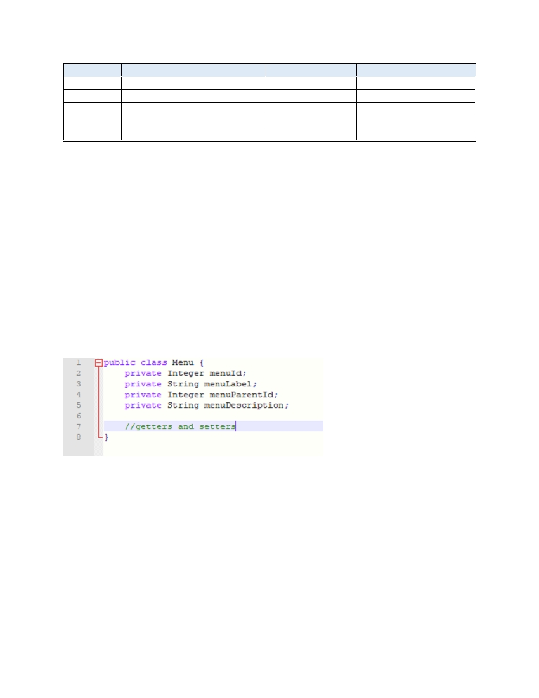
MENU_ID
MENU_LABEL
MENU_PARENT_ID
MENU_DESCRIPTION
105
Administration
null
110
Control Panel
105
...
302
Users
null
321
My Profile
302
...
322
Access Control
302
...
The purpose of the ticket would be to relocate the
"Access Control" menu to stay within the Administrator
menu.
However, because it is a legacy project, the
development team did not take the necessary care, and
when loading this structure from the database to the
respective Java “Menu” object, the development team
did not physically treat this entire structure as tree
menus. Therefore, the object in question looks like
this:
As each object of the class above represents a menu
item, we do not have here, in terms of Object-
oriented, a defined tree structure, but rather a
structure that came the way it is in the database,
that is, a relational/linear structure.
You end up discovering that you did not want this,
because in addition to the structure not being
physically like a tree, you will probably have some
extra work to implement recursive methods and other
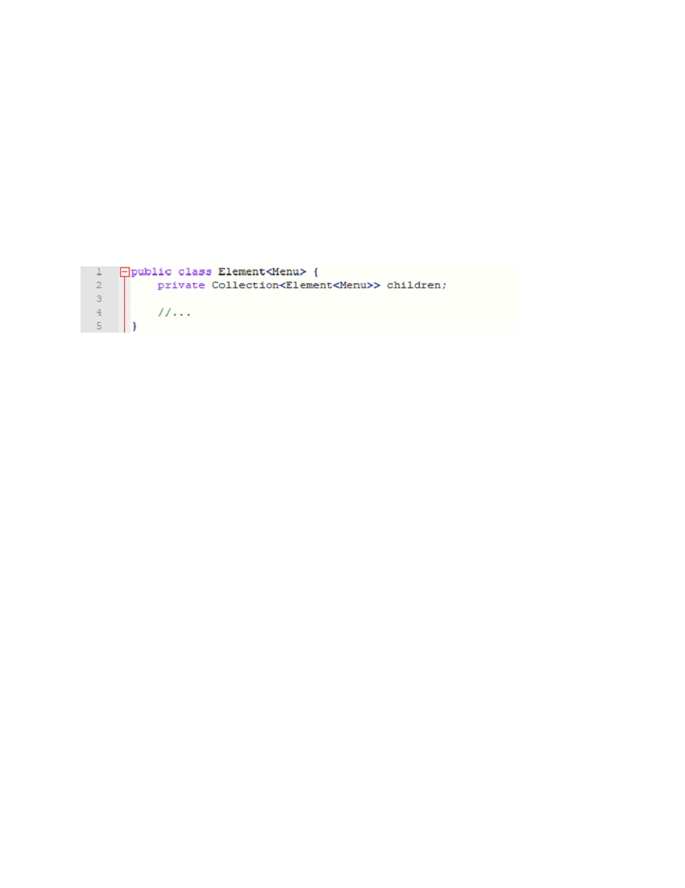
methods to perform operations for the nodes of the menu
tree.
Therefore, here would be a good circumstance to use
the HappyTree API.
The above structure would be transformed by the
HappyTree API (through the API Transformation Process)
into:
With the transformation performed, each “Element”
object encapsulates its respective “Menu” object
within itself, and each “Element” object is physically
in a position in the tree, thus representing a tree
node.
In addition, each element can have several other
elements within it, such as children, and each child
have other children, and so on, recursively
representing an entire complete tree.
After the tree is built, you can relocate the desired
menu item using the interfaces provided by the
HappyTree API, without the need to implement any
additional code. See below, how to use.
How to use
Continuing the example above and as already mentioned,
there is no need to implement any additional code to
relocate the desired menu. Just add the following
annotations to the “Menu” class:
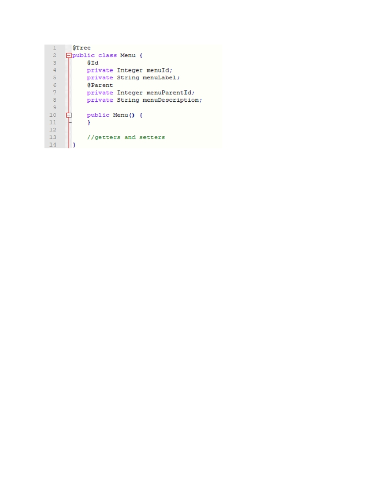
@Tree
Indicates that the class can be transformed, by the
API Transformation Process, into a tree node.
@Id
Unique and non-null identifier of the object to be
transformed.
@Parent
Identifier of the parent object to which the current
object will bind at the transformation moment.
There are some conditions for the API Transformation
Process to be successful:
The three annotations must be present in the class
to be transformed;
The value of the attribute annotated by @ID must
be mandatory, while the attribute annotated by
@Parent can be null, or point to a non-existent
parent. This @Parent attribute is responsible for
moving or not the object to the root level of the
tree, if it is null or not found.
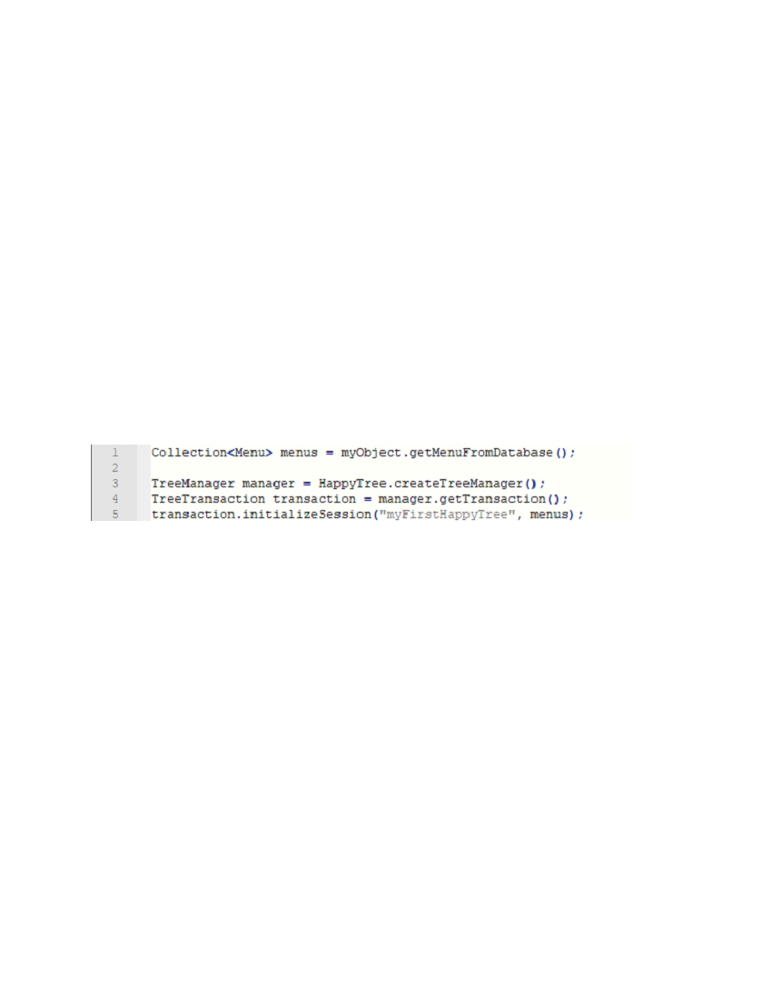
The attribute annotated by @ID must be of the same
type as the attribute annotated by @Parent .
From this point on, after just putting these
annotations to the class attributes, you already have
everything to transform your linear structure into a
real tree structure.
Your First Code Snippet
To initialize the menu tree in the example above, and
any other type of tree, we use a code snippet that is
quite common and will always be used at any tree
initialization:
From the code above, your tree is already built and
has a session identifier named "myFirstHappyTree".
Every tree (session) initialized is assigned a unique
and non-null session identifier. We will talk about
these concepts in more detail later.
However, it remains to fulfill the objective of the
ticket assigned to you. Although you already have the
tree built, it remains to reallocate the "Access
Control" menu from "Users" to "Administration".
As we already know, through the database in the example
above, the menu item with the label "Access Control"
has the @ID 322 and the menu item "Administration" has
the @ID 105 . With that in mind, just do the following:
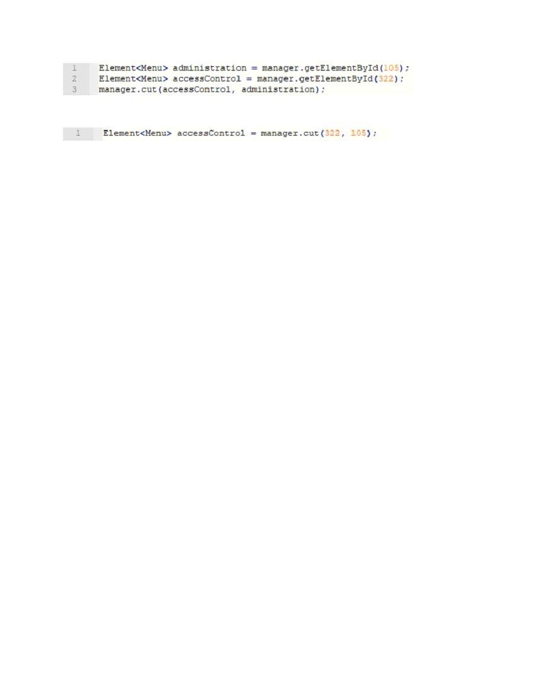
Alternatively:
Okay, now you have solved the ticket!
Requirements
HappyTree is an API that strives for simplicity and
that acts in a very specific way on Java model objects,
when they have a tree behavior. Such simplicity is also
reflected in the requirements.
There are only three basic requirements:
Java 1.8;
Maven 3.6.3;
The Java and Maven environment variables must be
well configured ($JAVA_HOME, $MAVEN_HOME and
$PATH).
Optional (It is optional, but highly recommended to
fix code issues):
SonarLint.
Download
You can import the HappyTree API via:
Maven
JAR

In the next chapter, you will see the HappyTree API
architectural specification. You will understand what
the functional interfaces are and what they are for,
the structure and behavior of the API as well as the
lifecycle and states of the objects, and to conclude,
the API Transformation Process.

Architectural Specification
Although until now you are able to use the HappyTree
API with some ease, but it is recommended that you
read this chapter to have a complete understanding of
all aspects of the HappyTree API.
We will adopt a Top-Down approach here, starting with
the exposed interfaces and its functionalities, and
then we will explain the structural and behavioral
composition of the API, in order to conclude with the
technical details. We promise it will not be tiring
reading!
Functional Architecture
The HappyTree API provides for the API client four
interfaces with different responsibilities.
Interfaces Scope
TreeSession
Responsible for storing the trees. Each
session has a unique, non-null identifier and
stores a collection of Element interface (in
a hierarchical tree structure), representing
the tree itself. Only it is possible to run
the
most
of
operations
related
to
elements/trees if the current tree session
associated to the transaction is active.
TreeTransaction
Object responsible for managing the sessions.
This object can create, activate, deactivate
and destroy stored sessions. It is through

this object that the TreeManager interface
performs operations on trees. For this, it is
necessary that the transaction is pointing to
a session and that this session is active.
The transaction acts as a kind of selector,
allowing the TreeManager object to perform
operations on one session at a time.
Therefore, when the API client performs an
operation like cut() as in the example above,
it is doing this operation on a predetermined
tree that was chosen through a transaction.
There are two ways to indicate to the
transaction a tree that this object should
reference.
The
first
is
through
the
initializeSession() that automatically, after
the initialization (creation) of the session,
the transaction already references the created
session.
The
second
is
through
sessionCheckout() , in which the API client
chooses a tree in memory that must be
referenced by the transaction.
Element
An element represents a node in a tree. It can
have none or many other elements within it,
such as children, and each child, likewise,
can have several other elements, and so on.
Beyond this, each element has a unique and
non-null @Id and a nullable @Parent ,

representing the parent identifier which the
element references. If the parent is a not
found element or even null, then the element
will stay in the root level of the tree.
In the API Transformation Process , it is this
object that will encapsulate the annotated
object that was used at the initialization of
the session, placing the objects of the linear
structure, which were transformed, in the
correct physical location within the tree,
contained within their respective elements
(tree nodes).
This object has a defined lifecycle, which
will be explained later.
TreeManager
Object responsible for performing operations
on trees. It is through TreeManager that you
will be able to create, cut, copy, remove,
update and persist elements about a given tree
session
that
was
selected
through
a
transaction.
All TreeManager operations need a transaction
referencing an active session, otherwise a
TreeException exception will be thrown.
Therefore, all of these interfaces are related as
follows:

TreeManager (invokes) -> TreeTransaction (to store) -> TreeSession (that contains) -> Element
In addition to these provided interfaces to the API
client, other classes are also exposed to be used:
HappyTree
Final class and not instantiable. This class
is the one that gives the initial start to use
the HappyTree API. As shown at the beginning
of this documentation, it is only intended to
return instances of TreeManager , working like
this, as a Helper class:
TreeManager manager = HappyTree.createTreeManager();
TreeException
Exception class associated with the HappyTree
API. In any specification violation, this
exception will be thrown.
Annotations
The annotations @Tree , @Id and @Parent were
exemplified at the beginning of this
documentation. Should only be used within the
context of the API Transformation Process .
All of these classes and interfaces are the ones that
are exposed and the API client can use.

Interface Methods
To see the list of interface methods, just enter this
link.
Application Architecture
Going down a little more in the Top-Down approach, now
we will see a little more detail in the general
architecture of the HappyTree API, but still
maintaining a certain level of abstraction.
General Architecture
In the image below, the general architecture of the
HappyTree API is represented as well as the class
packages and their responsibilities.
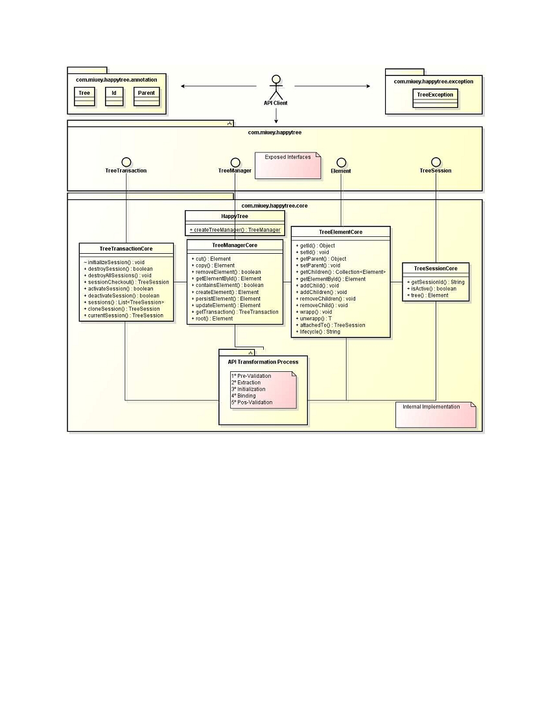
The HappyTree API has some packages, but two of them
can be considered "main":
com.miuey.happytree
This package is the package from which the API
client will be able to view and use the exposed
interfaces. Also, this package only contains
interfaces
that
must
be
exposed
as
functionalities for the API client. Therefore,
everything contained here must be public.

The package contains the interfaces already
talked about here:
TreeTransaction;
TreeManager;
Element;
TreeSession.
com.miuey.happytree.core
This
package
is
where
the
actual
implementation of these exposed interfaces
are, in addition to implementing the Element
object’s lifecycle (it will be seen later) and
the API Transformation Process phases. It
contains several classes that assist in
implementation, such as factories, Utils &
Helpers, validators, message repositories,
etc, but for internal use only.
This package is internal. Because it is
internal, this package should not be visible
to the API client, with the exception of the
HappyTree
class,
which
is
the
class
responsible for the API's entry point.
Below are the other packages:
com.miuey.happytree.annotation
This package is responsible for only store the
annotations that will be used in the API
Transformation Process . These annotations will

determine the identifier, the parent and the
object's own class (the annotated class) that
will be transformed into an Element object by
the HappyTree API, representing a node of the
tree. This package is public and the
annotations are, as already mentioned:
@Tree ;
@Id ;
@Parent .
com.miuey.happytree.exception
This package will keep the TreeException
class, threw in case an error occurs. This
package is public, as the API client needs to
handle this exception.
Structural Composition
An object of Element type represents a node in a tree.
A tree can only exist within a previously initialized
session ( TreeSession ). To initialize a session, the
API client needs to invoke an object that represents
a session transaction, this object is known as
TreeTransaction . However, the transaction can only be
recovered from within a manager, which implements the
TreeManager interface, provided to the API client.
We conclude that: every Element is inserted into a
TreeSession , which in turn is manipulated within a
TreeTransaction
and
finally
recovered
by
a
TreeManager .

Behavioral Composition
The HappyTree API allows the API client to use it under
two provided main entities: the manipulation of
elements in a tree, and the same manipulation of these
trees linked to sessions. Each tree has its respective
owner, and no other owner can handle trees other than
his own. Therefore, for this protection, the session
mechanism was created, where each element has a unique
identifier in the tree, as well as a session has its
own identifier within all open sessions in the
transaction.
Therefore, the relationship between Element and
TreeSession objects is intrinsic. The other two types
of objects, TreeManager and TreeTransaction , available
to the API client, are precisely the Element and
TreeSession manipulation objects respectively.
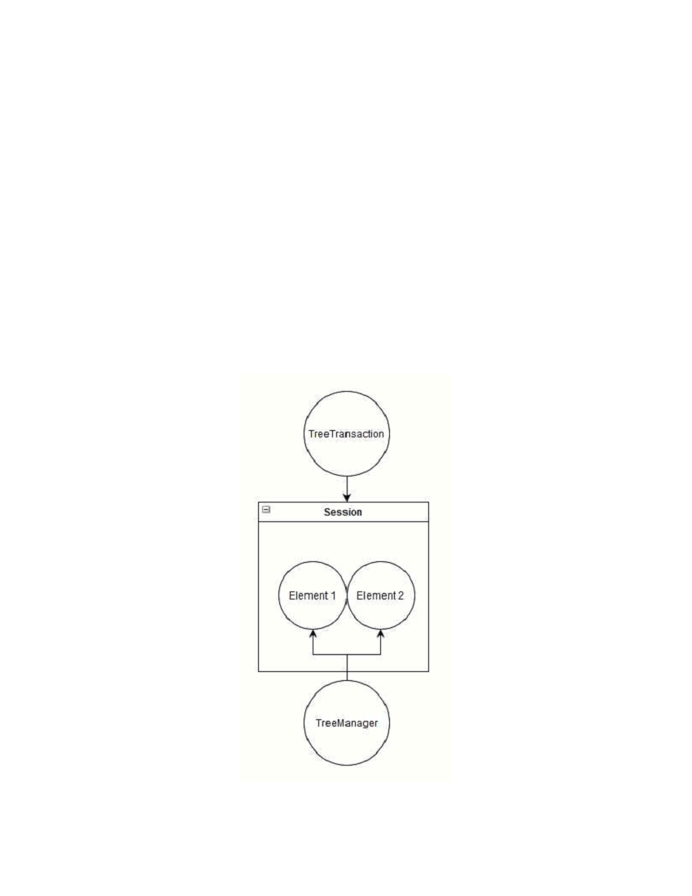
However, it is worth noting that the current session
must always be active in order to handle the tree.
This is the first check that the HappyTree API does.
You can have several active sessions, but the
TreeTransaction object can only work with one session
at a time, which is the session chosen by the API
client
by
invoking
the
TreeTransaction.sessionCheckout() method.
Thus, we see that there are two main entities ( Element
and TreeSession ) and two entities ( TreeManager and
TreeTransaction ) responsible for handling the main
entities.

Technical Architecture
Now that you know the main interfaces and how they
relate, and also how objects of these interfaces are
structured and their behavior, we can now dive into
the more technical details of the HappyTree API.
We will start to explain the contexts, and then we
will talk about the phases of using the API. With these
two concepts in mind, we will see at the lifecycle of
Element objects.
All of this initial explanation is very important for
you to understand why you sometimes got an exception
threw. This whole lifecycle concept of the Element
within the tree is the fundamental basis for using the
HappyTree API fully.
After that, we will see the states of the session, the
specifications
and
necessary
validations
that
HappyTree API does.
To conclude, we will explain in theory, how the API
Transformation Process works, converting a list of
linear objects in objects assembled like a real tree.
Contexts
The HappyTree API is intended to manage object trees,
however, it has no responsibility for the changes you
make to these objects, which represent the nodes in
the tree.
Consider the code below:
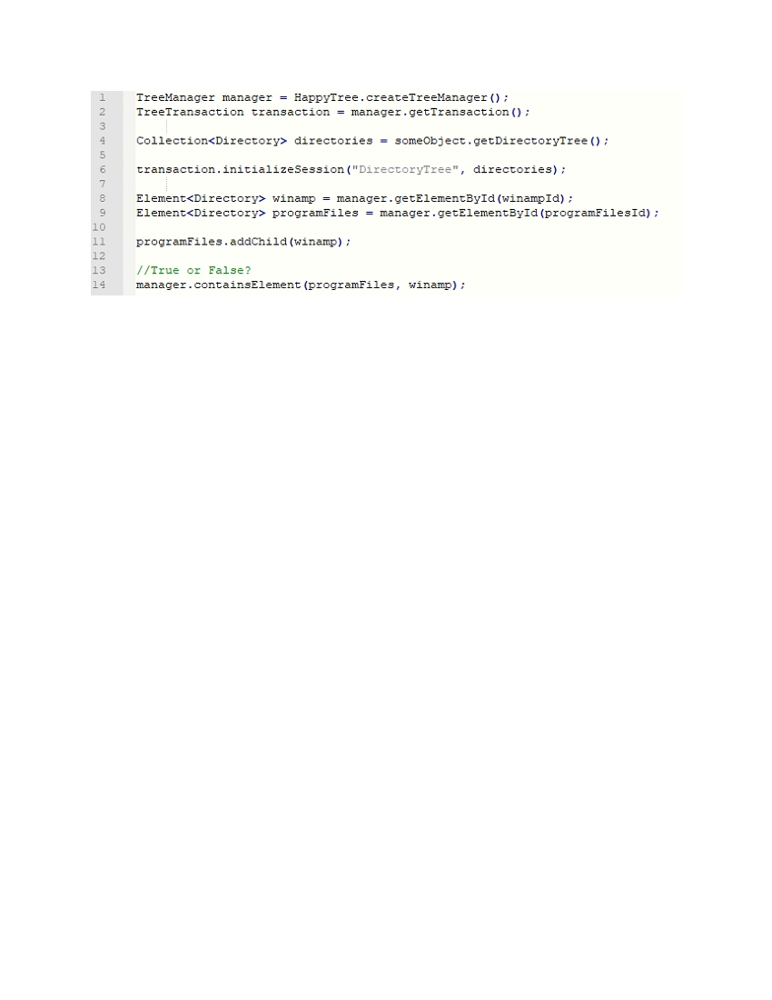
Is the return of the last line true or false ?
Does the “programFiles” directory really have the
“winamp” directory inside it, as a child, in the
“DirectoryTree” session?
The answer is no. Although the "programFiles" object
actually has the "winamp" object inside it, in the
"DirectoryTree"
session
this
change
is
not
synchronized yet, because as previously said, the
HappyTree API has no responsibility for the changes
you apply to tree objects.
What actually happens when you get an element from an
already assembled tree is that you actually receive a
clone of the element. The real instance of the element
is never returned, just clones of elements. Since the
returned element can have several children inside,
they are all "mirrored", thus, they are identical
copies of the elements that are within the tree
session.
Therefore, there are two ways to complete the code
above in order to move the "winamp" directory into
"programFiles" inside of the “DirectoryTree” session:
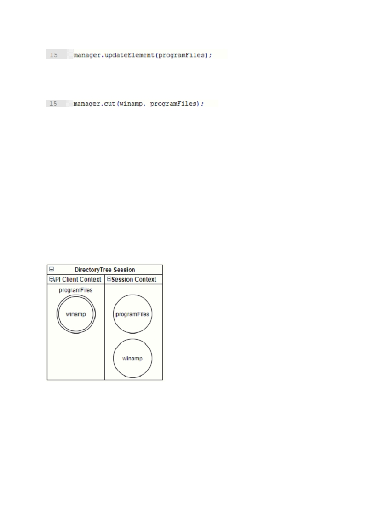
Or just invoke the method below without applying
changes directly to the element
Note: when a tree change occurs through the TreeManager
interface, it is not necessary to update the element.
Every change via TreeManager is automatically
synchronized to the tree.
With all that has been said so far, it is clear that
there are two contexts. Understands this as
perspectives: the API client's perspective and the
session (the tree) perspective. So, in relation to the
example above, we have the following:
Before synchronization.
After synchronization (by update or some TreeManager
method).
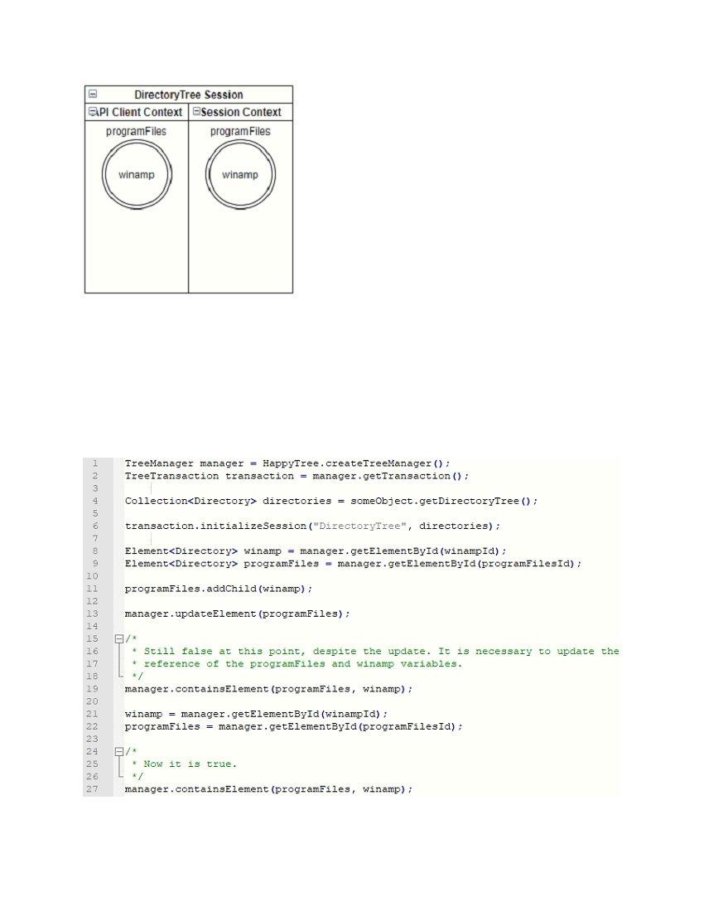
Be careful with object references
After synchronization, in the example above, you have
to ensure that your variables "programFiles" and
“winamp” have their references updated, so as not to
reference the previous state to the synchronization.
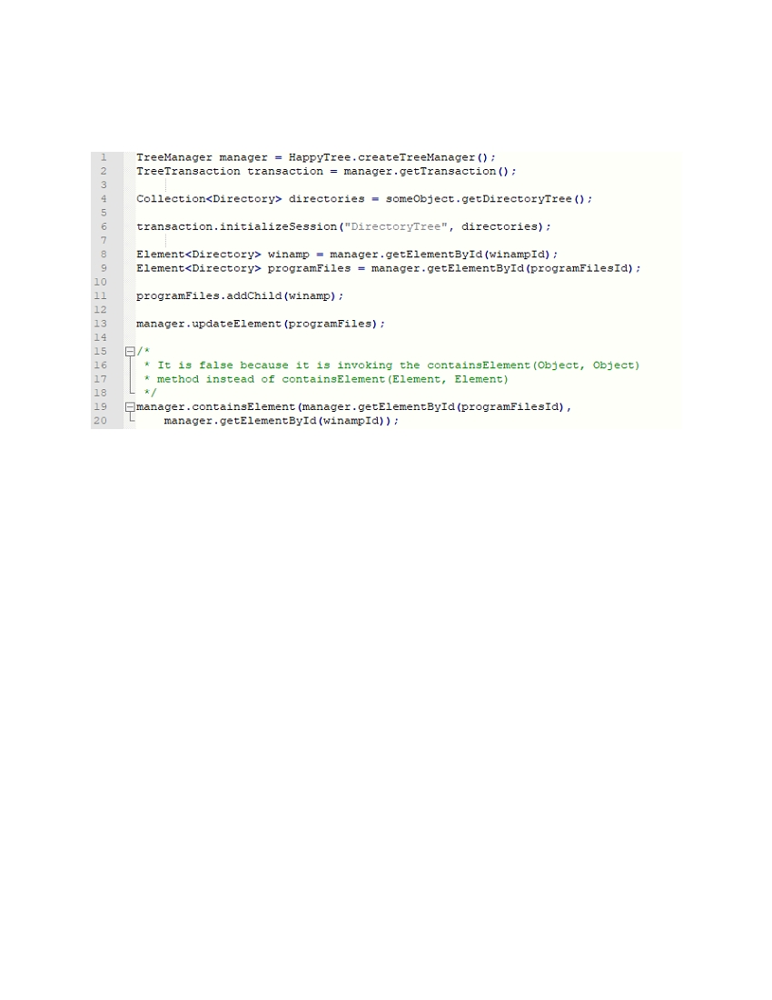
The API client also needs to take special care in the
immediate return of methods.
In the code example above, the API client intended to
invoke the version of the cut(Element, Element) method
but ended up invoking cut(Object, Object) . This is
another version of the cut() method that takes Object
as a parameter, instead of Element . This Object
represents the @Id of the element.
This is because of the immediate return of the
getElementById() method within the containsElement()
method. As the HappyTree API works with Java
reflection, in runtime the JVM associates the return
directly with Object .
Therefore, it is recommended to assign the return of
the method to a variable in order to use it, instead
of using immediate return.
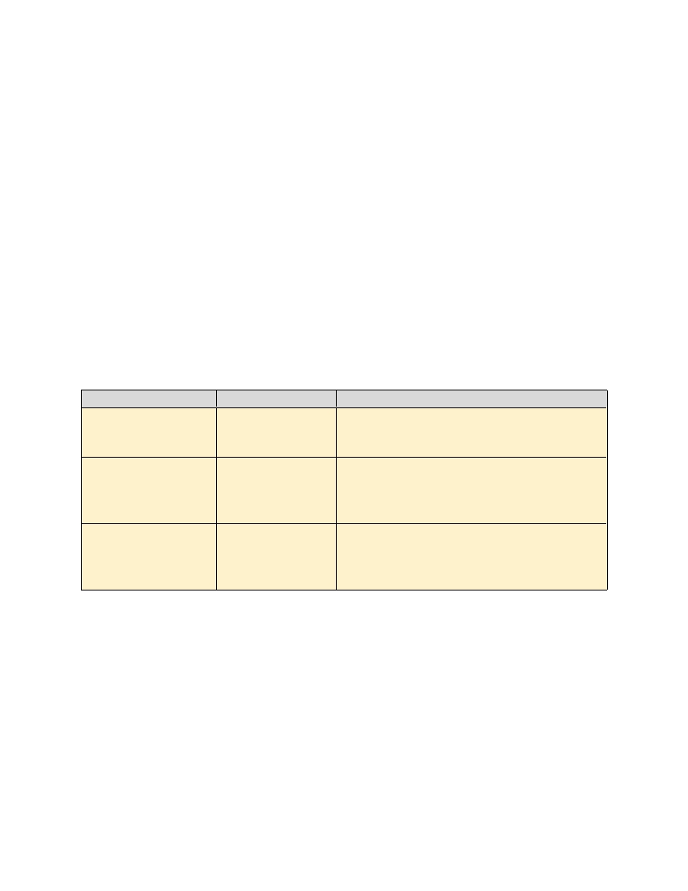
Phases
Now that you know very well about the two contexts of
the HappyTree API, it is much easier to recognize the
execution phases. The following description is
equivalent to either a new tree created from scratch
or a tree built through the API Transformation Process ,
because these phases are measured after the session
initializes.
There are three stages of execution. These stages have
no direct implication of the API usage, thus serving
as a purely informative feature, to facilitate the
understanding of the lifecycle of the Element objects
within the sessions.
Phase
Method
Description
Initial Phase
getElementById()
Occurs when the API client get the element. The
returned element has not yet undergone any
changes by the API client.
Usage Phase
createElement(),
Occurs when the API client applies a change,
addChild(), setId(), however small, to the state of the element that
removeChild(),
is returned from the previous phase.
wrap(), etc.
Synchronization Phase persistElement(),
For the changes in the previous phase to take
updateElement()
effect, it is necessary to synchronize them with
the tree session, using the indicated methods.
After that, both contexts are matched.
Element Lifecycle
The concepts of contexts and phases here were just for
you had better understand the life cycle of the
elements in the HappyTree API. We now present the
lifecycle states as well as their descriptions.
When you get an element from a tree session, you have
in your hands what we usually call of an attached
element to the tree. An attached (ATTACHED) element

represents exactly the faithful copy of the element in
relation to the session context, that is, you now, in
your context, in the context of the API client, have
an element that is a mirror of what is in the tree
session.
When you decide to want to change something in that
element that you got, it means that a copy of that
element, which was identical to the element of the
session context, will no longer be. To this state, we
call it detached (DETACHED) , because the element is no
longer synchronized with the tree.
Finally, you decide that this element is no longer
useful to the current tree, so you decide to remove
it. When removing an element from the tree, in the
context of the tree session, we say that the element
in question not exists (NOT_EXISTED) .
Therefore, the cycle is repeated, from the moment of
creating a new element or capturing an existing one,
until its possible removal.
Note: when creating an element from scratch, you are
creating an element that does not yet belong to the
tree, so its state assumes the value of nonexistent
(NOT_EXISTED).
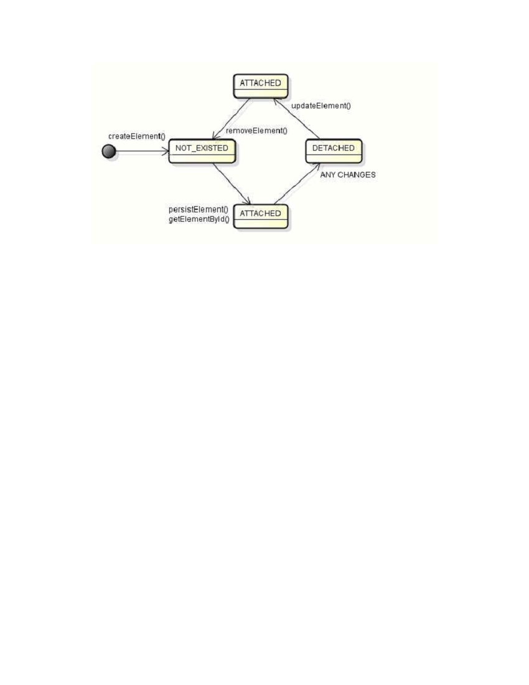
Session States
The object of the TreeSession interface is intended to
represent a tree of elements. When we say something
related to the session or the tree, both concepts have
the same meaning, since a session object has the entire
structure of the tree within it.
As mentioned at the beginning of this documentation,
the transaction can only work with one session at a
time. If you want to select sessions, just call the
sessionCheckout ()
method
provided
by
the
TreeTransaction interface. However, the API client has
to make sure that the session he wants to handle is
active, otherwise, a TreeException will be threw, and
this validation is done in almost all methods of the
TreeManager object.
Basically, there are only three possible states of a
session:
Activated
The session exists in memory and it is enabled
to be handled.

Deactivated
The session exists in memory and it is not
enabled to be handled. You cannot handle the
tree, through the TreeManager methods, with a
deactivated session.
Destroyed
The session no longer exists in memory. Here,
the reference of the session object is null.
Specifications & Validations
The HappyTree API performs a series of validations to
avoid inconsistencies that violate the specifications.
The validations occur in two situations: the first
would be in the API Transformation Process and the
other would be when invoking the methods of the
TreeManager interface after the tree was built.
The HappyTree API can throw exceptions represented by
two
types
of
objects:
TreeException
and
IllegalArgumentException.
The first one represents an exception class specific
to the HappyTree API, and it is threw when an API
specification is violated.
The last one is a runtime exception, native to Java.
In the context of the HappyTree API, this exception is
threw when the input variables are null.
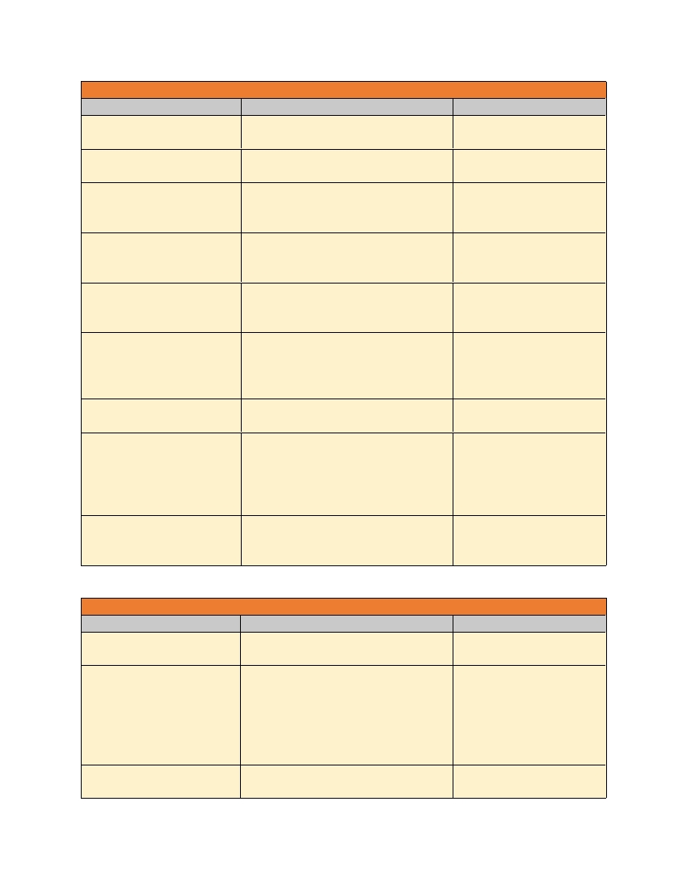
API Transformation Process (before the tree built)
Specification
Message
Type
The input parameters
Invalid null/empty argument(s).
IllegalArgumentException
cannot be null.
The session identifier must Already existing initialized session.
TreeException
be unique.
The class of the object to
There is no @TREE associated.
TreeException
be transformed must be
annotated with @Tree .
The Id of the object to be
There is no @ID associated.
TreeException
transformed must be
annotated with @Id .
The parent Id of the object There is no @PARENT associated.
TreeException
to be transformed must be
annotated with @Parent .
The class of the object to
Impossible to transform input
TreeException
be transformed must have object. Ensure the existence of
an empty constructor,
getters and setters.
getters, and setters.
The @Id attribute value
Invalid null/empty argument(s).
IllegalArgumentException
cannot be null.
The value of the @Id
Duplicated ID.
TreeException
attribute cannot be
duplicated in relation to
another object within the
same tree session.
The @Id and @Parent
Mismatch type ID error.
TreeException
attributes must be of the
same type.
TreeManager Methods Operations (after the tree built)
Specification
Message
Type
The input parameters
Invalid null/empty argument(s).
IllegalArgumentException
cannot be null.
When invoking an
No defined session.
TreeException
operation that handle
directly elements in the
tree, the transaction must
reference a defined
session.
When invoking an
No active session.
TreeException
operation that handle
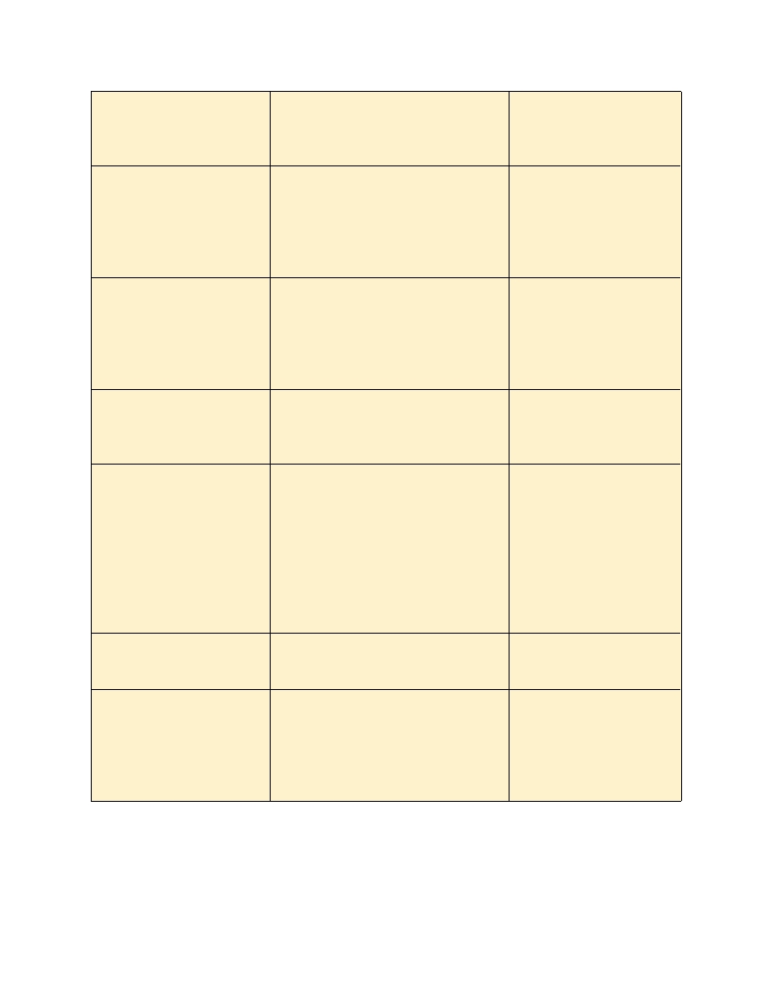
directly elements in the
tree, the transaction must
reference an active
session.
When handling an
Element not defined in this session.
TreeException
element, make sure that
the associated transaction
references the correct
session to which the
element belongs.
By copying or moving an
Mismatch type error. Incompatible
TreeException
element from one tree to
parameterized type tree.
another, both trees must
have the same type of
object that the Element
wraps.
It is not possible to
No possible to handle the root of
TreeException
perform operations on
the tree. Consider using a
elements that represent
transaction to clone trees.
the root of a tree.
Operations that change
No possible to
TreeException
the state of the tree can
copy/cut/remove elements.
only be performed
Invalid lifecycle state;
depending on the lifecycle
No possible to persist the
of the elements involved
element. Invalid lifecycle
in these operations (See
state;
the state diagram above,
No possible to update the
previous chapter).
element. Invalid lifecycle
state.
Duplicate ID elements are
Duplicated ID.
TreeException
not allowed within the
same tree.
When a session is
initialized, the root
element @Id of the tree is
the same as the identifier
of the initialized session
itself.
API Transformation Process (ATP)
As mentioned initially, this mechanism is responsible
for transforming a linear structure of Java model

objects, which are originally related through a tree
behavior, but which they are not structurally
represented as one.
The definition of "having a tree behavior even though
it is not" means having a collection of objects that
logically relate their self, which one object is child
of another one, but that structurally these objects
are not contained within each other.
Therefore, this mechanism transforms this linear
structure in such a way that objects are structurally
placed inside another. In the end, a resulting object
may have a list of children contained within it, where
each child may have another list of children, and so
on.
We saw that there are two ways to initialize a session,
one of which is responsible for initializing a session
by passing a collection of objects to be transformed,
thus triggering the API Transformation Process . Let’s
review then.
Creating a new tree from scratch
Here, there is no the ATP . The API client just
initialize a standard new tree session for handling
after. The result of this is a tree containing only
the root element.
The version of the invoked method to initialize a
standard tree session is Transaction.initializeSession
(String, Class) , where String is the session
identifier (unique and not null ) and Class is the
parameterized type of the tree that will be used by
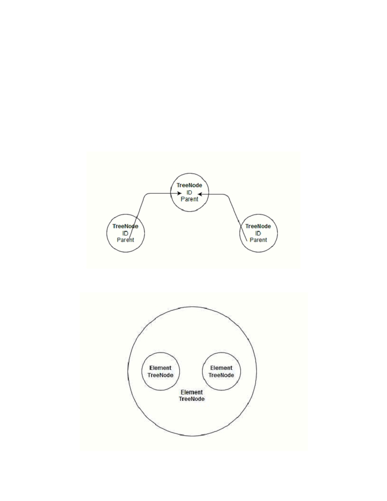
the Element interface to wrap an object that would
represent a node in the tree.
Creating a new tree using the ATP
The API client has a structure that would represents
a tree, but it is designed in a linear form like:
Then, this structure will be transformed into:
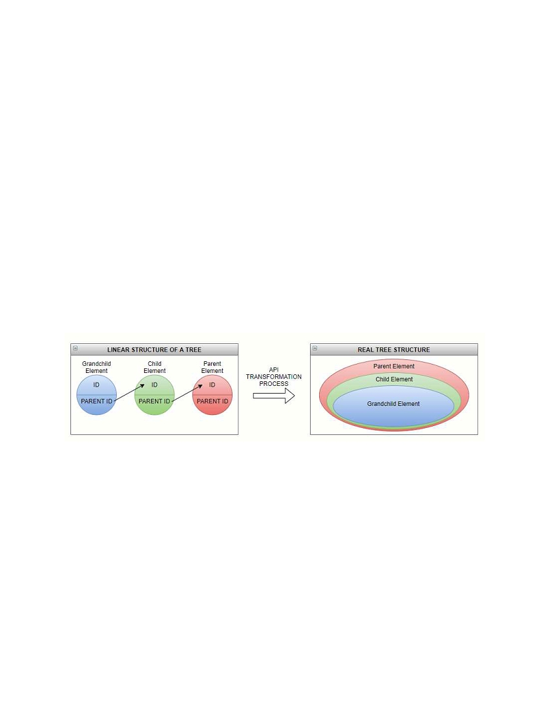
The version of the invoked method to initialize a tree
session through ATP is Transaction.initializeSession
(String, Collection) where String is the session
identifier (unique and not null ) and Collection
represents the list of object to be transformed by ATP .
This collection contains objects whose class is
annotated by @Tree , @Id and @Parent and consequently
represents the parameterized type of the tree. During
the transformation process ( ATP lifecycle ), these
objects will be automatically wrapped within their
respective element in the current tree session, thus
representing nodes in the tree. To unwrap the
respective object from an element, simply invoke
Element.unwrap() .
ATP Lifecycle
The API Transformation Process has an inner-
implementation of a lifecycle, which basically
consists of distinct phases that aim to transform the
linear structure of objects, that would represent a
tree data structure, into a real tree.
Its lifecycle has no impact at the functional level,
when the API client makes use of it. The explanation
contained here is purely informative, serving only for
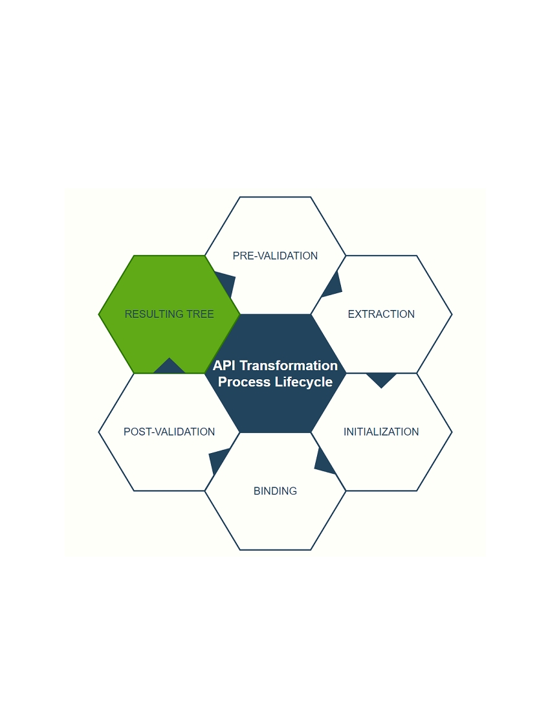
users to better understand the process of assembling
a tree from a legacy structure of linear objects of
which they would represent a tree.
As input, ATP receives the list of objects that will
be transformed into a tree through five distinct and
consecutive phases:
1.Pre-Validation
It performs validations in order to verify if
the received input is compatible with the
adopted
specifications.
It
can
throw

IllegalArgumentException if the list of
objects to be transformed is empty or null and
TreeException in the other specifications.
The following validations are:
Verifies if the list of objects to be
transformed is not null or empty;
Verifies if the class of the objects to be
transformed is annotated with @Tree;
Verifies if the class of the objects to be
transformed is annotated with @Id;
Verifies if the class of the objects to be
transformed is annotated with @Parent;
Verifies if the @Id and @Parent attributes
have the same type;
Verifies if there is an object with null
@Id value;
Checks for duplicate IDs;
Verifies if the class of the objects to be
transformed has getters & setters.
2.Extraction
If the input represented by the list of objects
to be transformed passed all validations from
the previous phase, then the HappyTree API
takes them and extracts them in order to
separate them from their respective parents.
Therefore, as a product for the next phase,
there will be the objects and their respective
parents separated into two blocks.

3.Initialization
In this phase, the HappyTree API instantiates
an object of type Element for each source
object used as input and passes the respective
@Id and @Parent attributes of the source
object to that element. In addition, the
source object itself is automatically wrapped
into that element, thus making the source
object liable to be a tree node, since the
element naturally represents a node in the
context of the HappyTree API.
After the tree is built, to retrieve the source
object just invoke the Element.unwrap()
method.
As a product of this phase, we already have
the instantiated elements with all the
information from the source objects.
4.Binding
After obtaining the list of elements resulting
from the previous phase, the HappyTree API
will now bind each element to its respective
parent, through the block of separated parent
objects in the Extraction phase.
Therefore, it is at this phase that the tree
is actually assembled. Thus, for each node in
the tree we have a represented element object,
where each element has:

The @Id attribute value;
The @parent attribute value;
The wrappedObject corresponding the
respective source object transformed in
this process;
The collection of children , corresponding
to other elements in which they are
children of this;
The tree session , which this element
belongs.
5.Post-Validation
This phase confirms that the provided input
corresponds exactly to the generated output
(the tree itself). If there is any
inconsistency, a TreeException is threw,
immediately aborting the process and rolling
back the session.